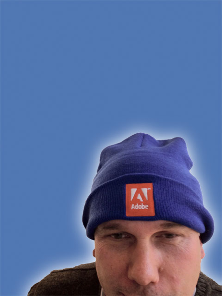
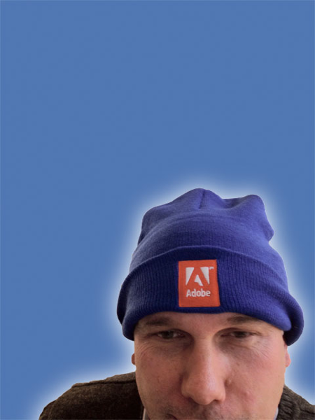

TEST
THE WEB
FORWARD
Better tests for a better web
 

400,000
web developers in China
草根推动web的发展
The web is defined by the community
web的标准化需要社区的力量
The community can make the web consistent
ISO6346
19th Century Railroad
1435mm
21st Century Railroad
1435mm
标准, 通讯之本！
Standards are the root of communication
标准, 凝聚力量!
Standards bring people together
测试推动标准
Tests make standards real
测试推动web的发展
Your tests move the web forward

Colophon
- reveal.js
by Hakim El Hattab - Font
Source Sans Pro